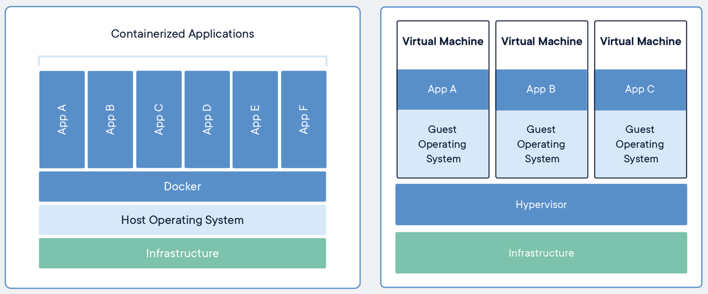

Managing containers
Outline
In this chapter you will learn:
- What is a container.
- How to run a container from an image.
- How to check containers running in your system.
- How to execute a command in a running container.
- How to access a shell session in a running container.
- How to restart, stop and remove containers.
Walkthrough
Container is an isolated PROCESS in user space sharing OS kernel with other containers (processes). Container management tools such as Docker leverage existing OS mechanisms such as namespaces and cgroups to limit what a given process can see and how much resources a given process can use. Moreover, they use chroot to replace the root filesystem of the process with the content of a container image.
These mechanisms enable emulation of distinct OS environments for a process and limit the impact of that process on other processes to the bare minimum.

There is no hypervisor involved. There is no separate instance of an operating system - guest OS. Consequently, containers take up much less space than VMs (container images are typically tens of MBs in size, VMs take GBs in size) and start in miliseconds (in opposition to VMs which require several minutes to boot guest OS and start the application).
Task 1: Running containers
In order to run our first container we will use the docker run command. It has the following syntax:
$ docker run [OPTIONS] IMAGE [COMMAND] [ARG...]
docker run first takes several options, then a reference to an image from which to create a container, and finally a command with arguments to execute inside the container.
As an example, let's run ls command in a container created from alpine image (Alpine is a lightweight distribution of Linux):
$ docker run alpine ls -l
Unable to find image 'alpine:latest' locally
latest: Pulling from library/alpine
bdf0201b3a05: Pull complete
Digest: sha256:28ef97b8686a0b5399129e9b763d5b7e5ff03576aa5580d6f4182a49c5fe1913
Status: Downloaded newer image for alpine:latest
total 56
drwxr-xr-x 2 root root 4096 Apr 8 20:30 bin
drwxr-xr-x 5 root root 340 May 4 10:34 dev
drwxr-xr-x 1 root root 4096 May 4 10:34 etc
drwxr-xr-x 2 root root 4096 Apr 8 20:30 home
drwxr-xr-x 5 root root 4096 Apr 8 20:30 lib
...
Analyze the command output.
Docker first pulls a missing alpine image from a registry using tag latest. Then, it creates a container from that image, and executes ls -l command inside the container. Note the result of runnig ls command in above output:
total 56
drwxr-xr-x 2 root root 4096 Apr 8 20:30 bin
drwxr-xr-x 5 root root 340 May 4 10:34 dev
drwxr-xr-x 1 root root 4096 May 4 10:34 etc
...
Let's run another example:
$ docker run alpine echo "hello hello hello"
hello hello hello
This time Docker reuses already pulled alpine image and runs echo command in a new container almost immediately.
Note that running a command inside a new container takes less than a second to complete. Imagine booting up a new virtual machine, running the same command and then killing the machine - that would take minutes to complete. This ilustrates how much the containers may be faster than the VMs.
Task 2: Listing containers
By executing ls and echo commands we created two containers. We can list them using docker ps command:
$ docker ps
CONTAINER ID IMAGE COMMAND CREATED STATUS PORTS NAMES
The command output is empty, because docker ps by default lists only running containers.
Docker keeps a container running as long as the command started inside the container is still running. In our case, the ls and echo commands exited as soon as the output was written. This means that containers were stopped by Docker daemon.
We may force listing all containers regardless of their state by adding --all flag to docker ps:
$ docker ps --all
CONTAINER ID IMAGE COMMAND CREATED STATUS PORTS NAMES
2606068544c8 alpine "echo 'hello hello h…" 6 minutes ago Exited (0) 6 minutes ago dazzling_raman
e4e9678659e3 alpine "ls -l" 6 minutes ago Exited (0) 6 minutes ago unruffled_albattani
Analyze the command output.
Now, the stopped containers are present in the list. Note their status in the STATUS column:
Exited (0) 6 minutes ago
Task 3: Removing containers
We will no longer need the stopped containers. Let's remove them by passing their IDs to docker rm command:
$ docker rm 2606068544c8 e4e9678659e3
2606068544c8
e4e9678659e3
Confirm successful removal by listing containers again:
$ docker ps --all
CONTAINER ID IMAGE COMMAND CREATED STATUS PORTS NAMES
Task 4: Interactive shell sessions
So far, we have learned how to run single commands in containers. This method may be convenient if we need to run a service daemon, test new commands or execute an ad-hoc task. However, it is not very useful if we need to perform more advanced operations, e.g., debug a container and preserve contexts of subsequent commands. In such situations, we may need an interactive shell session into the container to interact with the container in the same way as with a regular operating system.
Let's try to run a shell session in a new container:
$ docker run --interactive --tty --rm alpine sh
In order to prevent immediate exit of shell process and stopping the container as in the previous examples, we provided the following additional options to docker run command:
--interactiveto forward localstdininto the container (interactive session),--ttyto allocate a pseudo-terminal.
Additionaly, we used --rm to tell Docker to automatically remove the container after its done with executing the session.
After the container starts the Docker engine switches user context into the bash shell inside the container. It also binds input and output streams between the local session and the shell session in the container.
Let's run several sample commands inside the container:
List files in the root directory:
$ / # ls -l / bin dev etc home lib media mnt opt proc root run sbin srv sys tmp usr varThis is the exact content of the Docker image, now mounted under
/.Check hostname:
$ / # hostname 5f676173f668By default, hostname of a container is equal to its ID. What is the hostname of your host OS?
Check information about operating system:
$ / # uname -a Linux 5f676173f668 4.9.125-linuxkit #1 SMP Fri Sep 7 08:20:28 UTC 2018 x86_64 LinuxCheck the output of the same command on your host OS.
Try to run
aptpackage manager:$ / # apt sh: apt: not foundaptis present in the host OS (Ubuntu) but it is not present in Alpine Linux. Alpine supplies a different package manager:$ / # apk apk-tools 2.10.3, compiled for x86_64. Installing and removing packages: add Add PACKAGEs to 'world' and install (or upgrade) them, while ensuring that all dependencies are met del Remove PACKAGEs from 'world' and uninstall them ... This apk has coffee making abilities.Install
figletpackage:$ apk install figletPlay with filget:
$ figlet "HELLO WORLD"
Exit the container shell:
$ / # exit
Try to run figlet on Docker host:
$ figlet "HELLO WORLD"
The program 'figlet' can be found in the following packages:
* figlet
* toilet
Try: sudo apt install <selected package>
The figlet command is not present on the host, because it was installed only in the container.
As the last step, ensure that the container has been automatically removed (--rm option):
$ docker ps --all
CONTAINER ID IMAGE COMMAND CREATED STATUS PORTS NAMES
Task 5: Running containers as daemons
It is totally correct to run containers without specifying a command to run inside a container. Most Docker images come with a default command defined in a Dockerfile.
E.g., the official image for Redis defines the following default command in its Dockerfile:
CMD ["redis-server"]
It starts Redis daemon in the foreground since this is what most users would do with the image - start the Redis service.
Then, let's run a Redis container without specifying a command:
$ docker run redis
1:C 04 May 2019 15:34:53.491 # oO0OoO0OoO0Oo Redis is starting oO0OoO0OoO0Oo
1:C 04 May 2019 15:34:53.492 # Redis version=5.0.4, bits=64, commit=00000000, modified=0, pid=1, just started
1:C 04 May 2019 15:34:53.492 # Warning: no config file specified, using the default config. In order to specify a config file use redis-server /path/to/redis.conf
1:M 04 May 2019 15:34:53.495 * Running mode=standalone, port=6379.
1:M 04 May 2019 15:34:53.495 # WARNING: The TCP backlog setting of 511 cannot be enforced because /proc/sys/net/core/somaxconn is set to the lower value of 128.
1:M 04 May 2019 15:34:53.495 # Server initialized
1:M 04 May 2019 15:34:53.496 # WARNING you have Transparent Huge Pages (THP) support enabled in your kernel. This will create latency and memory usage issues with Redis. To fix this issue run the command 'echo never > /sys/kernel/mm/transparent_hugepage/enabled' as root, and add it to your /etc/rc.local in order to retain the setting after a reboot. Redis must be restarted after THP is disabled.
1:M 04 May 2019 15:34:53.496 * Ready to accept connections
Analyze the command output.
Docker executes the default command, which starts the Redis server and then starts populating log entries to the stdout.
This may not be the most effective way to start containers with long-running processes such as Redis or Nginx servers, because they block the current user session. We would have to every-time run a new terminal session to start a new container.
Stop the Redis container by hitting ctrl + ^c:
^C1:signal-handler (1557003118) Received SIGINT scheduling shutdown...
1:M 04 May 2019 20:51:58.619 # User requested shutdown...
1:M 04 May 2019 20:51:58.619 * Saving the final RDB snapshot before exiting.
1:M 04 May 2019 20:51:58.648 * DB saved on disk
1:M 04 May 2019 20:51:58.648 # Redis is now ready to exit, bye bye...
Docker enables running containers in the background by passing -d (detached) flag to docker run. Let's run another Redis container, but this time move it into the background:
$ docker run -d redis
511f41395ff8d87639030df2fa1848121e142168fcce9bec30b58fc50ab5c6bd
Verify that container is running:
$ docker ps
CONTAINER ID IMAGE COMMAND CREATED STATUS PORTS NAMES
511f41395ff8 redis "docker-entrypoint.s…" 1 minute ago Up 1 minute 6379/tcp focused_mendel
Task 6: Naming containers
Take another look at the output of docker ps command:
$ docker ps --all
CONTAINER ID IMAGE COMMAND CREATED STATUS PORTS NAMES
82f58fddd99c redis "docker-entrypoint.s…" 16 seconds ago Up 14 seconds 6379/tcp clever_wright
bb5ed1224665 redis "docker-entrypoint.s…" About a minute ago Exited (0) 59 seconds ago keen_almeida
Analyze the command output.
Each container has an ID and a name which are generated randomly every time a new container starts.
It is a good practice to name containers with concrete and meaningful values. First, it is easier to refer such containers in subsequent Docker commands. Second, containers can be referenced by name in a Docker network - important for service discovery in multi-container applications.
In order to assign a name to a container there is --name option for docker run command. As an example, let's create a container from Nginx image and name it mynginx:
$ docker run --name mynginx -d nginx
List containers to verify the name:
$ docker ps
CONTAINER ID IMAGE COMMAND CREATED STATUS PORTS NAMES
14e9ac152299 nginx "nginx -g 'daemon of…" 5 seconds ago Up 2 seconds 80/tcp mynginx
82f58fddd99c redis "docker-entrypoint.s…" About a minute ago Up About a minute 6379/tcp clever_wright
Task 7: Executing commands in running containers
Until now, we have been able to execute commands in a container by providing them as an argument to the docker run command or by launching an interactive session.
How to execute the command if the container has already been started?
To run a command in a running container, we can use the docker exec command. It has the following syntax:
$ docker exec [OPTIONS] CONTAINER COMMAND [ARG...]
Similarly to docker run command, docker exec takes options, as well as command with arguments to execute in the container. However, instead of a reference to an image, it takes a reference to a running container.
Let's execute cat command in the running Nginx container to fetch configuration of Nginx server:
$ docker exec mynginx cat /etc/nginx/conf.d/default.conf
server {
listen 80;
server_name localhost;
...
Note that we referenced container by its name (mynginx).
Also, docker exec can be used to run an interactive bash session in the running container:
$ docker exec --interactive --tty mynginx bash
$ root@ef5fe670c3dd:/# cd /var/log/nginx/
$ root@ef5fe670c3dd:/var/log/nginx# ls
$ access.log error.log
$ root@ef5fe670c3dd:/var/log/nginx# cat error.log
$ exit
Task 8: Restarting containers
At some point, we may want to stop some of the containers to temporarily release the system resources (memory, processor) and start other containers, while retaining the ability to restart the stopped ones.
docker stop command enables to stop a container process. The memory and processor resources are then released, while the container data is still persisted on the disk. Later, it is possible to restart the stopped container process using docker start command. It starts the container process with a default command or a command specified initialily in docker run.
List all running containers:
$ docker ps
CONTAINER ID IMAGE COMMAND CREATED STATUS PORTS NAMES
14e9ac152299 nginx "nginx -g 'daemon of…" 4 minutes ago Up 4 minutes 80/tcp mynginx
82f58fddd99c redis "docker-entrypoint.s…" 5 minutes ago Up 5 minutes 6379/tcp clever_wright
Stop containers running Redis and Nginx servers:
$ docker stop mynginx
mynginx
$ docker stop 82f58fddd99c
82f58fddd99c
Confirm that containers have been stopped:
$ docker ps --all
CONTAINER ID IMAGE COMMAND CREATED STATUS PORTS NAMES
14e9ac152299 nginx "nginx -g 'daemon of…" 5 minutes ago Exited (0) 16 seconds ago mynginx
82f58fddd99c redis "docker-entrypoint.s…" 6 minutes ago Exited (0) 12 seconds ago clever_wright
Restart the Nginx container:
$ docker start mynginx
mynginx
Confirm that the container has started:
$ docker ps
CONTAINER ID IMAGE COMMAND CREATED STATUS PORTS NAMES
14e9ac152299 nginx "nginx -g 'daemon of…" 5 minutes ago Up 4 seconds 80/tcp mynginx
Exercises
- Stop and remove all containers (including the stopped ones).
- Run a new container with
Redisversion4.0.14in the background, name itmyredis. Run a new container with
MariaDBversion10.1in the background, name itmymariadb.Hint: First, try to run the container in the foreground to detect eventual startup issues. Additional option may be required to successfully run the container - use Docker documentation to find it.
Container started successfully if the following entry is present in the log output:
2019-05-04 21:19:14 140606575032320 [Note] mysqld: ready for connections.Use
--rmflag to prevent multiple stale containers. If unable to exit the container, usedocker kill CONTAINERcommand in a new terminal session to terminate the container.Fetch configuration of
MariaDBserver from the runningmymariadbcontainer using interactive bash session. The configiration is located in file/etc/mysql/my.cnf.- Fetch
Redislogs from the runningmyrediscontainer. It should be located in the/var/log/redisdirectory. - Add a file in an arbitrary location in
myrediscontainer. You can usetouchcommand to accomplish that. - Restart
myrediscontainer and check if the created file still exists.